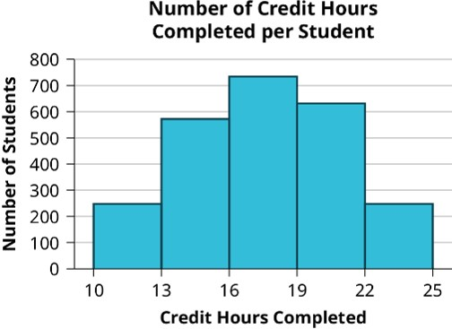

Classifying Data Types
Understanding data begins with recognizing its classification and the processes used to collect it. Data can broadly be categorized into two classifications with each providing a unique insight into a population or sample allowing for a more targeted analysis of particular aspects. When collecting data it is important to implement an appropriate sampling method so that the data can be used to learn something about the population that it originated. This section will detail data types as well as the common sampling methods used to collect that data.
Data Classification
Data originates from either a population or a sample and can be classified into two main categories: Qualitative Data and Quantitative Data.
What is Qualitative Data?
Qualitative data (or categorical data) categorizes or describes attributes of a population, often using words or letters. Examples include
- hair color (e.g., black, brown)
- blood type (e.g., AB+, O-)
- Zip Codes (e.g., 38401, 49715, 26537)
- car types(e.g., Toyota, Explorer, Jeep)
What is Quantitative Data?
Quantitative data represents numerical values obtained by counting or measuring attributes. Examples include
- weight (pounds, ounces, grams, etc.)
- pulse rate
- number of people or objects
- Discrete data results when the number of possible values is either a finite number or a “countable” number (i.e. the number of possible values is 0, 1, 2, 3, . . . ). Examples might include number of phone calls: 0 calls, 1 call, 2 calls, etc.
- Continuous data results from infinitely many possible values that correspond to some continuous scale that covers a range of values without gaps, interruptions, or jumps. This includes almost measurements of distance, time, volume, temperature, mass, or combinations of any of these. For example, weights like 2.4 grams and 7.5 pounds would be continuous data since the scale they originate from has infinite divisions (i.e. you could get the measurement as precise as possible).
Example : Discrete vs Continuous Data
Determine the correct data type (quantitative or qualitative). For data that is quantitative, indicate whether it is continuous or discrete. Hint: Data that are discrete often start with the words "the number of."
- The number of pairs of shoes you own
- The type of car you drive
- The distance from your home to the nearest grocery store
- The number of classes you take per school year
- The type of calculator you use
- Weights of dogs at an animal shelter
- Number of correct answers on a quiz
- Amount of money you spend at the local Quickmart
Solution: Discrete vs Continuous Data
- Part A: Discrete Quantitative
The number of pairs of shoes you own is countable (e.g., 1 pair, 2 pairs, 3 pairs, etc.), which makes it quantitative and discrete.
- Part B: Qualitative
The type of car you drive (e.g., SUV, sedan, truck) is categorical and cannot be measured or counted, making it qualitative data.
- Part C: Continuous Quantitative
The distance to the nearest grocery store can be measured along a continuous scale (e.g., 1.5 miles, 3.2 miles), allowing for infinite precision, so it is quantitative and continuous.
- Part D: Discrete Quantitative
The number of classes you take per school year is countable (e.g., 4 classes, 5 classes, etc.), so it is quantitative and discrete.
- Part E: Qualitative
The type of calculator you use (e.g., graphing calculator, scientific calculator) is descriptive and categorical, making it qualitative data.
- Part F: Continuous Quantitative
The weights of dogs at an animal shelter can be measured along a continuous scale (e.g., 12.7 pounds, 23.4 pounds) with infinite precision, making this data quantitative and continuous.
- Part G: Discrete Quantitative
The number of correct answers on a quiz is countable (e.g., 1 correct answer, 2 correct answers), so it is quantitative and discrete.
- Part H: Discrete Quantitative
Although the amount of money spent at a store can include decimals (e.g., $5.75), money is not measured on a continuous scale because it is typically limited to two decimal places (cents). Thus, it is quantitative and discrete.
\[ \tag*{\(\blacksquare\)} \]
Example
Consider the following information and table, then answer the questions below.
- Part A: Which information is categorical data?
- Part B: Which information is quantitative data?
| Make/Model | Class | Transmission | Cylinders | City MPG | Highway MPG | Annual Fuel Cost |
|---|---|---|---|---|---|---|
| Chevrolet Corvette | Two-Seater | Manual | 8 | 17 | 29 | $2,650 |
| Nissan Cube | Station Wagon | Manual | 4 | 25 | 30 | $1,850 |
| Ford Fusion | Midsize | Automatic | 4 | 23 | 36 | $1,800 |
| Chevrolet Impala | Large | Automatic | 6 | 18 | 28 | $2,400 |
Solution
- Part A: Categorical data describes attributes or categories and
cannot be measured numerically. From the table, the categorical data includes:
- Make/Model: The names of vehicles, such as "Chevrolet Corvette" or "Nissan Cube."
- Class: The vehicle category, such as "Two-Seater" or "Midsize."
- Transmission: The type of transmission, either "Manual" or "Automatic."
- Cylinders: The number of engine cylinders (e.g., 4, 6, 8) is categorical because it classifies the engine type rather than measuring it.
- Part B: Quantitative data includes numerical values obtained by
counting or measuring. From the table, the quantitative data includes:
- City MPG: The number of miles per gallon in city driving (e.g., 17, 25, 23, etc.).
- Highway MPG: The number of miles per gallon in highway driving (e.g., 29, 30, 36, etc.).
- Annual Fuel Cost: The cost of fuel for one year, measured in dollars (e.g., $2,650, $1,850).
\[ \tag*{\(\blacksquare\)} \]
Example : Type of Data from an Image
The registrar at State University keeps records of the number of credit hours students complete each semester. The data collected are summarized in the histogram. The class boundaries are 10 to less than 13, 13 to less than 16, 16 to less than 19, 19 to less than 22, and 22 to less than 25. What type of data is depicted in the graph below?
Solution: Type of Data from an Image
Since students would be countable (i.e. 0 students, 1 student, 2 students, etc.) this graph depicts data that is Discrete Quantitative.
\[ \tag*{\(\blacksquare\)} \]
Conclusion
Understanding the classification of data and its levels of measurement is essential for conducting accurate and meaningful statistical analysis. By distinguishing between qualitative and quantitative data, and recognizing whether data is discrete or continuous, we can better select appropriate methods for summarizing and analyzing information. Similarly, identifying the level of measurement—nominal, ordinal, interval, or ratio—ensures we apply the correct statistical tools and interpret results accurately. These foundational concepts provide the framework for understanding how data is collected, categorized, and analyzed, paving the way for more advanced statistical techniques.